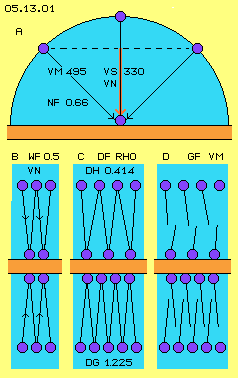
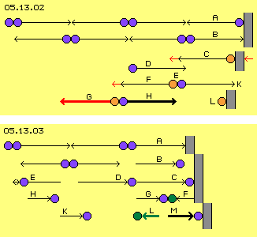
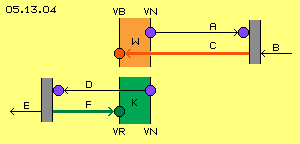
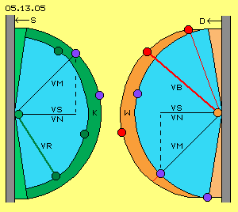

Formula of Energy
E = 0,5 * m * c^2 is the most abstract formula between three basic terms of physics. E = 0,5 * m * v^2 is the basic formula for energy of moving bodies of mechanics. That ´speed-by-square-half´ is an analogue factor at diverse formula of flow-sciences. These formula might be sufficient and mostly appropriate, however they are generalizing all times, don´t describe exactly the real background and thus don´t express the essential characteristics of occurrences. For example, the terms of energy and mass are used nearby ´fictive´ in order to represent most different appearances. The light-speed is called a constant limit for all movement possibilities, however that´s a rather questionable assumption.
Analogue transmission of formula of different subjects of physics well could be permissible, however a pure mathematical handling is ´dangerous´ because probably essential criteria could get neglected. For example, the common formula of lift again has the factor speed-by-square, so the lift forces theoretical should raise unlimited - however beyond sound-speed real lift exists any more (but only a mechanical pushing upward is possible).
At flux-sciences many formula of mechanics are used analogue - and that generalized view hinders the view on decisive differences. For example, the common techniques prevailing are bound to the application of pressure in shape of ´explosion-technology´, while the ´implosion-technology´ is nearby unknown (even Viktor Schauberger vehemently pointed out the important differences, four generations ago). At the following I´ll describe these opposite aspects and I´ll work out which special points of view the common flux-sciences don´t take in account. At first however I´ll show, as an example, a formula which only is based on real physical facts.
Formula of Atmospheric Pressure

At picture 05.13.01 factors for the calculation of atmospheric pressure are shown by graphs. At A schematic is sketched a particle (blue) hitting at a wall (red) by its speed of molecular movement, at air with VM = 495 m/s. At one spot of the wall, the particles arrive from different directions (half-circle light-blue). Representative for all directions are two movements of each 45 degree (see arrows). The sideward thrusts at the wall are balanced, the vertical component, as an average, is 2/3 of molecular speed. So the ´normal speed´ VN is less then the molecular speed by ´normal-factor´ NF = 0,66 (resp. 2/3). At air this corresponds same time to its sound speed VS = 330 m/s (because the sound wanders also at this zigzag track through the space).
At the following the length of tracks are drawn by previous length VN. At B the real cause of factor 0,5 of common formula is visualized. The particles hit by that speed vertical (here drawn some diagonal) onto the wall, are rejected and fly back same way within likely time. So the pressure is affected at the wall only each second track (resp. after each second time-unit) - and based on this real fact the ´way-factor´ WF = 0,5 appears at formula of flux-sciences (and not only by analogy e.g. to steady acceleration of mechanics).
At this picture at C is visualized the undisputed density-factor DF = Rho: the more particles are within a room (marked light blue), the more particles hit onto the wall within a time-unit. Concerning atmospheric air pressure, at the ground exists the density DG = 1,225 kg/m^3, at level of ten kilometres height however DH = 0,414 kg/m^3 up there.
At this picture at D is visualized the speed-factor GF, where normally is GF = VM, thus corresponding to the normal molecular speed (German Geschwindigkeit = speed). Here are drawn particles more ´cold´, which move only some shorter distance within given time-unit (see length of lines). So by given density, these slow particles need some more time until hitting at the wall resp. the frequency of ´pressure-affects´ is proportional to given molecular speed. That´s the real cause, why common formula of flux-sciences show the factor speed-by-square: once as expression of ´vehemence´ (VM at A) and second as expression of frequency (VM at D) of hitting strokes towards the wall, thus that V^2 us based on real processes - and not only by abstract-theoretic analogy to V^2 of mechanics laws.
So the new formula for the calculation of pressure is composed by normal-, way- and density-factor and speed-by-square, thus P = NF * WF * DF * VM^2. Based on previous data of air results P = 0,66 * 0,5 * 1,225 * 495^2 = 100.052 N/m^2 - a rather exact normal atmospheric pressure. Using standard VM = 500,6 m/s would result the norm-pressure of 101.320 N/m^2 - so that´s a sufficient approval for logic consistency of that new formula like for fitting description of the physical processes of its factors.
Formula and Reality
So this formula represents the real facts and processes exactly and thus is suitable for calculations - however for real case still won´t do any good. Well could be determined e.g. the static pressure by measurement-units, however neither the density nor the speed of molecular movement can be measured at a running process. It´s only possible to assume one value and to deduce the other value fictively. Measurement-units well can determine e.g. the speed of a flow and common formula of static pressure P = 0,5 * Rho * v^2 thus is based on the flow-speed (and not at molecular-speed like previous formula). However also at that case, speed and density are only fictive averages.
This uncertainty is accepted for common calculations and sufficient results confirm this generalization is reasonable. At chapter 05.12. ´A380 and Lift´ (of part ´Aero-Technology´ such common formula did achieve ´reasonable´ results, concerning the static pressure like its counterpart the dynamic pressure of flows. Nevertheless I don´t like these abstractions because essential points of view get lost. I mentioned that several times at previous chapters, however I´ll point out that problem once more by an example of basic importance.
Flow by Pressure
Generally it makes no difference whether a body moves through a ´resting´ fluid (like e.g. an airplane) or fluid moves relative to a resting body (like e.g. flows within pipes) or even the body also is moving (like e.g. the blades of a pump or a turbine). Decisive all times are the relative movements and speeds. At first, here is discussed that case, where a flow is generated by a moving body (e.g. a pump-blade or a piston within its cylinder or even a wing with an angle of attack). In general, these bodies here are called a ´wall´ (marked grey).
At picture 05.13.02 particles (blue) of air schematic are drawn, simplistic arranged at horizontal level. Based on molecular movement they fly from one collision to the next by normal molecular speed, here just to and fro at horizontal level. At A, the particle flies off the wall towards left. Same time its left-hand neighbouring particle flies towards right and both collide at the middle. At B, the right particle flies back again in direction towards the wall and its collision-partner flies back to its original place left side. Analogue other particles further left are ´swinging´ to and fro.
At C now is sketched, the wall (grey) moves towards left same time. A particle (red) hits onto the wall some earlier and thus is rejected some earlier. The particle flies towards left, now however some faster, with its previous molecular speed plus the speed of the wall-movement (see red tip of arrows). Its previous collision-partner flies against it like last time. However now the place of collision E is displaced some further left (in comparison with situation B). Both particles exchange their speeds (and directions), i.e. now the left particle (red) flies with that increased speed F towards left, while the right particle (blue) moves back towards wall, again by normal molecular speed K.

Also at all following collisions further left, that process is repeated: the places of collisions become shifted towards frontside, the increased speed G is transmitted onto each collision-partner left side (red), while each collision-partner right side (blue) flies back towards right by normal molecular speed H. All movements back towards the wall thus occur by normal speed (H and K etc.), each particle (C and L etc.) is rejected by the wall with increased speed and that acceleration is transferred by each collision further towards left.
Flow by Suction
At picture 05.13.03 now the opposite process is visualized, where the wall moves back towards right side. At first row again the starting position is shown, where particles move to and fro between collisions at horizontal level. After a collision, the particle A flies towards right into direction of the wall. After one time-unit (second row) the particles left side collide once more, while particle B right side has not yet reached wall, because the wall is moving back toward right side.
Finally short time later (third row) that particle hits onto the wall at C. Within that time-interval, also its collision-partner D did go on moving towards right. Again, its left collision-partner E did collide with its left neighbouring collision-partner (here not drawn) and already is moving back towards right side (see double-arrow at E).
At F is shown the situation after the collision at the wall. The particle got rejected and flies back towards left, now however by decelerated speed (marked green) as its previous normal molecular speed is reduced by the speed of the wall movement. Until next collision, thus its partner G moves relative faster and thus longer distance towards right. So opposite to previous picture, now here the places of collisions become shifted towards right side (in comparison with first row A).
That displacement of collision-locations is much stronger than at previous process, caused by ´delay of return´ of each partner right side and as all particles each left side move unhindered towards right side longer distances. In addition, these left-side particles (G, H, K and M etc., marked blue) fly into direction of the wall by normal molecular speed, while all right-side particles (F and L etc., marked green) fly contrary direction only by reduced speed.
Flow by Heat
At previous fictive experiments thus only a wall is moved towards left or right side and a flow of fluid is generated left side of the wall. If at both cases the wall moves by same speed, naturally the flows must show likely speeds, finally according to the speed of the wall movement. At picture 05.13.04 now both situations are shown once more.
The particle A flies by normal speed VN towards right into direction of the wall. That wall B same times moves towards left, so the particle becomes rejected. Its way-back C occurs with the accelerated speed VB (German Beschleunigung = acceleration). This acceleration corresponds to the speed of the wall, i.e. the ´flow´ got produced resulting of the speed-difference at both ways. This difference here is marked red because representing heat W (German Wärme).
By right understanding, ´heat´ is only an expression for the speed of molecular movement. However again that term resp. ´heat-energy´ is used most detached of that real basis and even mixed up with the term of density. Outer space e.g. is told rather ´cold´. However, the particles there won´t move slower but there are only few to hit onto a ´thermometer´ out there. If any atom by any occurrence achieved fleeing-speed and thus did leave the earth - why should its flight through ´void´ become decelerated or even stopped down? At previous processes however it´s a clear statement: a wall moving forward against air generates a flow by production of heat - in the true sense of ´heat´ as the accelerated speed of molecular movements.

Flow by Cold
The opposite process schematic is shown at this picture below: the particle D flies with normal speed VN towards left to the wall. Same time, the wall E moves towards left. After a collision, the particle F flies back towards right side, now however by reduced speed VR. So a ´flow´ results from the difference of speeds at both ways. That difference is marked green as ´cold´ K.
The movements of the wall thus results flowing of likely speeds at both cases, which however show quite different characteristics. Moving-forward of the wall affects pressure, the particles become accelerated beyond previous given speed and thus same time with the flow also heat comes up. Opposite, moving-back of the wall produces a suction area of relative void, the reflection of particles occur with delay. The backward flight occurs slower than by the originally given speed, so same time with flow also coldness comes up. The common formula are based on density and average flow-speed, however don´t pay attention to the different behaviour and function of density nor speed.
Thermodynamics
Opposite to my statements in earlier chapters, nevertheless are involves processes of ´thermodynamics´ - however again not as cause but only as follow of molecular movements. Previous considerations are based only at one moving wall without any other limitations, so concerning an ´open system´. Results however are comparable within ´closed systems´ e.g. if that wall is represented by a piston moving to and fro within a cylinder.
Affecting pressure demands energy-input and resulting are corresponding stronger kinetic energies in shape of accelerated particle movements and, same time, stronger static pressures, e.g. at compression-phase of piston-machines. At the following expansion-phase the intermediately stored energy affects onto the back-moving piston, however by all ´experience-rules of thermodynamics´ never the energy in total can be regained.
All times, some rest of energy will remain respective escapes as ´heat-loss´ into the environment. That miserable efficiency show all technologies based on pressures, no matter whether air-compressor, combustion- or steam-engines and all other applications with pressure. Finally and unfortunately was deduced by that limited view, any perpetuum mobile never ever could work. Here however comes up the concrete question: previous process of cooling should set free corresponding energy - however, how and where comes up a corresponding surplus of energy - if the laws of ´energy-constant´ still are valid.
Loss of Heat
Previous pictures simplistic showed movements of particles in horizontal directions. At picture 05.13.05 now again is shown, some particles (blue) fall onto one spot of a wall from any directions. Left side is drawn a ´suction-wall´ S (moving back to left side). Right side is drawn a ´pressure-wall´ D (forward-moving, also towards left). Also drawn are each ways towards the walls, which occur with molecular speed VM. In average, the pressure affects only by component right angle towards the wall, thus by previous ´normal´ speed VN, which same time is likely to sound speed VS.
At the pressure wall D, the particles (light red) are rejected with increased speed VB, ray-like into forward directions (dark red). That ´enlarged radius´ is marked red and practically represents the increased heat W. In reality however, not all particles come ahead that distance. The wall plus the rejected particles wander steady into areas of particles yet not involved - with correspondingly increased frequency of hits. So there arises a dam-up respective stronger static pressure in front of the wall. This resistance rises by square of the wall-speed, until lastly an enormous energy-input is necessary to overcome the ´sound-barrier´.
The generated heat thus is not able to ´clear-up´ the area in front of the wall. Opposite, the increased speed even has a decreasing affect, as it spreads forward-outward into a wider cone-shaped space. Lastly that ´heat-front´ evaporates ineffective, practically as a total heat-loss (within an open system, while within a closed systems the heat is lost only by parts). Really, that area of increased pressure does not reach far out into space, e.g. downside of a wing only a short distances. So the density and corresponding resistance is concentrated near or direct at the ´wall´.

Gain of Density and Order
At this picture left side the corresponding situation of the backward-moving suction-wall S is sketched. Some particles (blue) fall radial towards one spot of the wall by normal speed VN. After the delayed rejection (green), they move back with reduced speed VR, in addition by angles more flat. The particles (green) thus are not rejected so far and wide (only within the smaller are marked light-blue). The difference between the starting and rejected spots is marked dark-green, representing the cold area K.
Corresponding to this cooling-down, the slower particles demand less volume (i.e. the particles are gathered at the smaller blue area). The equivalent to the loss of heat thus is represented by an increased density - plus an unhindered flow into the generated void area (here marked dark-green). From all sides the particles fall into that ´part-vacuum´ and as the wall moves back continuously, the particles can fall into that general direction again and again. They can fly relative parallel and thus rather narrow to each other. So this flow is much stronger than the chaotic ´heat-flow´ of previous situation.
The upper face of a wing represents such a back-stepping wall, however not frontal like at these pictures but positioned diagonal. Opposite to previous ´heat-front´ that ´cold-front´ resp. relative void spreads out forward-upward incredible far. Far upside of the nose of the wing e.g. exists reduced static pressure und increased speed of that ´artificial wind´, most strong however at the front part upside of the wing. Upside above the end of the wing however exists already normal air-pressure, just because the relative void becomes filled up by that generated flow (however all times only up to sound-speed, see special chapter concerning lift at wing).
So previous question concerning the energy-constant got an answer: the loss of kinetic energy by cooling-down is compensated by increased density, plus the flow into the generated ´part-vacuum´, plus better order of vectors of all movements. Within the closed system e.g. of piston-machines that cooling is not compensated, just because no additional flow from outside is possible. Open systems however can be designed that kind, additional fluid is merged into the original flow unhindered and thus well ordered and dense flows are generated. However also closed circuits allow the organization of movement processes that kind, common ´thermodynamic-losses´ don´t come up, but the total kinetic energy of the generated flows inclusive twist are available for external use (see later chapters of corresponding machines).
As an approval might serve the example often mentioned by Viktor Schauberger and confirmed by exact measurements: waters of mountain torrents get lost their potential energy of high level while moving downward. So based on classic view the water or the environment should heat up essentially. In reality however, the temperature of water tends to four degree Celsius, i.e. towards the most high density of water. Naturally everyone immediately thinks at a cooling-effect of evaporation, however decisive reason is the shape of water movements: each bended wall of each stone represents a suction area. The waters fall into the ´void´ by well ordered and dense flows, on and on at spiral tracks into various directions. That´s why the mountain torrents plus the environment are refreshing cool, no matter which general air-temperature exists, without any doubts.
Benefit without Effort
The kinetic energy of these dense and ordered flows naturally is usable, at mountain torrents and by machines as well. By classic understanding no energy is to ´win´, so that usable energy should demand corresponding efforts - like at any orderly power-machine. The general fault of that thinking is, energy can only be transferred from one shape into an other shape. Besides this however, one can use an intermediate existing occurrence. Here for example, a flow is generated by ´cooling down´ the molecular movements and the kinetic energy of these flows are used, before the motions returning to their origin state of chaotic molecular movement.
Previous moving walls naturally represent a suction-wall at one side and same time a pressure-wall at the other side - when organized unfavourably (e.g. at piston machines). These walls must not stand frontal to the flow. For example, the upper face of a wing stands diagonal to the flow, nevertheless generating a void at its rear part and thus also an ´artificial´ flow comes up. If the wing shows only small angle of attack, it has practically no pressure-side. Later chapters will show, also pumps can be designed only with suction-sides (and vice versa a turbine can be constructed only with pressure-sides).
That ´cooling-principle´ also works just with no mechanic walls, because each fast flow represents a relative suction-are for neighbouring slower flow. From the slow flow, some particles are falling into the faster flow. They are rejected with delay and less speed, thus they disappear from their original area or at least come back with reduced resistance. Any hurricane practically represents many included cylinders, from outside towards inside turning faster, so continuously affecting like suction towards the environment. Any tornado practically represents a batch of air-disks turning faster form below towards upside, thus the air is pulled spiral upward.
Both processes of movements can be rebuild by machines, where efforts only are demanded for producing an initial flow. The design of the parts and movement processes must allow self-acceleration working continuously. Finally, it´s only a transmission of static pressure into usable dynamic pressure. The benefit of such kinetic pressure energies is much higher than the demanded energy input for the trigger of such processes.
Not only Heat-Transmission
I oppose vehement against common views of thermodynamics, because these are applied prevailingly in sense of inevitable heat-losses. Each heat-pump achieves three times higher benefits than costs - and physicians don´t like it (even the effects are simply explained by ´common laws´). In addition is common argument, the heat pumps can only serves for hot-water supply and house-heating, however can not produce real ´valuable´ energies - like combustion-technologies (with its miserable efficiency, which is not valuable but extreme expensive if real costs from source to the environmental pollution are calculated).
I oppose against the limited view of thermodynamics, because here it´s not a question of transmitting a little bit heat into other shape (while common technology takes huge losses of heat same time). Heat and cooling are only side-effects of implosion-technologies, decisive however is the usage of the enormous and inexhaustible kinetic energy of molecular movements.
The difference is easy to demonstrate by a well known example: cavitation occurs at fast running ship-props (or in general at pumps), if suction locally and intermediately is so strong, the water can not flow fast enough into the void. A ´hole´ is drawn into water-compound and short time later, the molecules fall into that void area. That suddenly imploding of ´soft´ water demolishes the solid metal. The holes within the metal are not produced by a little bit static pressure nor some more or less heat, but it´s the violence of just normal molecular movements energy, represented by some few water molecules shredding the hard compound of metal.
Project >100
This energy is given and available and it´s the task to use it, not like cavitation as ´workplace accident´ but as a continuous process, with minimum energy-input and extreme high output, with efficiency not nearby hundred percent, but multiple higher. One may no longer be contented about (wrong understanding of) energy-constant or inevitable thermodynamic-heatlosses and one may no longer be ´happy´ all formula theoretic exactly approve that inefficiency and naturally corresponding designed techniques confirm that status-quo. A general ´Project >100´ must be started and explosion-technologies are to replace by applications of implosion in total.
At this chapter once more are pointed out essential differences: production of pressure and heat results resistance by square and thus system-based losses, while at applications of suction the resistance decreases by square to the speeds. Only these techniques allow the usage of the inexhaustible energy of molecular movements, without any damage of environment.
At this chapter multiple statement of the great naturalist Schauberger is confirmed: production of heat by explosion-technology is destroying (and he had foreseen the environmental pollutions) while the organization of processes and usage of ´constructive´ cold by implosion-technology is nature-conform and offers unlimited possibilities. Finally by previous graphs and considerations I was able to understand Schaubergers statements some better - and I hope some Schauberger friends too.
Theses considerations also concern upside formula: their general v^2 does not correspond to real processes (instead of should be used previous normal, accelerated or reduced speeds VM, VB or VR). In addition, these formula use the density Rho however don´t differ whether it´s ´chaotic´ density based on pressure and heat or it´s density based on ordered flows. Common flux-sciences do not pay attention to these specific differences at all.
Much more important than formula however is the general starting point for replacing explosion-technologies with their wasting results by nature-conform implosion-technologies. At diverse chapters of that Fluid-Technology are mentioned sufficient proposals for technical realization. If specialists take these points of view, naturally even better machines are build.